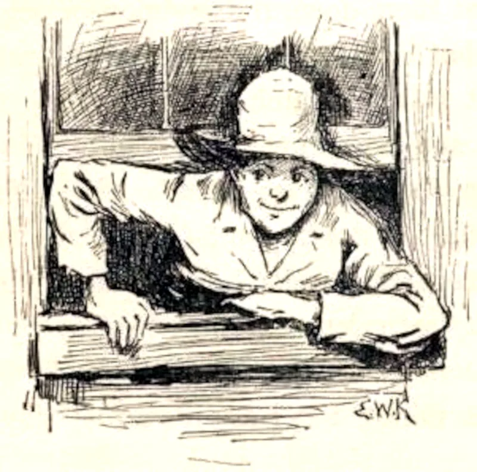

Language, Media & Critical Thinking · Realism, Satire & Voice
Mark Twain
The Pioneer of the American Voice: river pilot hydrology, deadpan satire, and the triumph of a sound heart over a deformed conscience.
Samuel Langhorne Clemens (1835–1910), writing as Mark Twain, shattered the stiff, British-imitative drawing-room style of 19th-century American letters. He brought the living speech of steamboat pilots, frontier miners, runaway boys, and enslaved deckhands into high literature. Ernest Hemingway famously observed: “All modern American literature comes from one book by Mark Twain called Huckleberry Finn.” Beyond humor, Twain was an ardent technologist, a patent holder, an intimate friend of Nikola Tesla, and an unsparing critic of societal hypocrisy.
Vernacular RevolutionMississippi HydrologySound Heart vs. Deformed ConscienceNikola Tesla FriendshipThe Gilded Age
Mark Twain in White Linen (1907)
Iconic portrait by A.F. Bradley. Twain adopted his dramatic white linen suit year-round late in life as a trademark theatrical uniform, joking that it gave him “the courage to be distinct.”
Photograph by A.F. Bradley, New York, 1907. Library of Congress Prints and Photographs Division.
Learning Tracks
Grades 6–8: Frontier Tall Tales, Dialect Voice, The Whitewashed Fence & Steamboat PilotingGrades 9–12: Moral Irony, Huck’s Conscience vs. Society, Anti-Imperialism & Technological Ambition
Interactive Exploration
The Twain Tone, Satire & Conscience Lab
Analyze how Twain manipulates dialect, deadpan narrative pacing, and moral subversion to expose human folly.
Satire & Rhetoric Engine
Toggle through four of Twain’s most celebrated stylistic and ethical breakthroughs to examine the mechanical levers of his prose.
The Crisis of Conscience: “All right, then, I’ll go to hell”
Adventures of Huckleberry Finn (1884) · Chapter 31
Moral Subversion / Irony98%
Vernacular Authenticity95%
“It was a close place. I took it up, and held it in my hand. I was a-trembling, because I’d got to decide, for ever, betwixt two things, and I knowed it. I studied a minute, sort of holding my breath, and then says to myself: ‘All right, then, I’ll go to hell’—and tore it up.”
The Teaching Point: This is the moral pivot of American literature. Huck believes what his society and Sunday school taught him: that helping an enslaved man escape is a mortal sin against property and church. Because his “deformed conscience” tells him he is damned, his decision to tear up the letter and protect Jim is not rebellious vanity—it is total self-sacrifice driven by an uncorrupted heart.
Biographical Foundations
From the Mississippi Shoals to the Gilded Age
Typesetter, river pilot, silver prospector, and global celebrity: a life spanning America’s industrial transformation.
1835 – 1857
Hannibal & The Printing Office
Born in Florida, Missouri, Clemens moved at age four to Hannibal on the west bank of the Mississippi. Following his father’s death, eleven-year-old Sam left school to apprentice as a printer at the Hannibal Western Union. Setting movable lead type letter by letter trained his ear in regional spellings, rhythm, punctuation, and journalistic brevity.
1857 – 1861
Steamboat Pilot on the Great River
Under master pilot Horace Bixby, Clemens spent two years memorizing every snag, sandbar, bluff reef, and current change along 1,200 miles of the Mississippi River between St. Louis and New Orleans. Piloting was the highest-paid, most intellectually demanding craft in the West. The outbreak of the Civil War halted commercial river traffic, ending his river career.
1861 – 1871
Nevada Mines & The Pen Name
Traveling west by stagecoach with his brother Orion, Clemens prospected for silver in Virginia City, Nevada. Failing as a miner, he joined the Territorial Enterprise newspaper. In 1863, he first signed his sketches "Mark Twain"—the leadsman's cry for two fathoms (12 feet) of water, signaling safe passage. In 1865, his California tall tale of the "Jumping Frog" made him a national sensation.
1871 – 1910
Hartford, Tesla & Global Fame
Settling in Hartford, Connecticut, Twain composed his greatest novels. A passionate champion of technology, he installed one of the first private residential telephones, invested heavily in early electric motors, and spent hours in Nikola Tesla’s Manhattan laboratory. Financial ruin caused by the mechanical failure of the Paige typesetting machine forced an around-the-world lecture tour in 1895 to pay off all debts in full.
Historical Records & American Archives
Twain in Nikola Tesla's Laboratory (1894)
Photograph taken in Tesla’s laboratory at 35 South Fifth Avenue, New York. Twain holds a loop of wire and an electrodeless vacuum lamp that glows brightly, powered entirely through wireless high-frequency electromagnetic resonance from Tesla's oscillator.
Photograph by Nikola Tesla / historical archive, 1894. Public domain.

Huckleberry Finn Frontispiece (1885)
Original pen-and-ink illustration by E.W. Kemble for the first American edition of Adventures of Huckleberry Finn. Twain personally selected twenty-three-year-old Kemble for his ability to capture authentic rural American character without sentimental Victorian polish.
Illustration by E.W. Kemble, Charles L. Webster & Co., 1885. Public domain.The Steamboat Natchez at New Orleans
Historic river packet at the Mississippi levee. The towering wooden pilothouse atop the hurricane deck gave pilots the vantage point needed to read the hidden shoals and shifting gravel bars of the river.
19th-century archival photograph, Detroit Publishing Co. / Library of Congress. Public domain.
Core Philosophy & Moral Thought
A Sound Heart vs. A Deformed Conscience
How Twain diagnosed the tragic gap between societal religion and genuine righteousness.
In an unpublished notebook draft explaining Huckleberry Finn, Twain wrote a single sentence that unlocks his moral philosophy: “A book of mine where a sound heart & a deformed conscience come into collision & conscience suffers defeat.” Conscience, for Twain, is not a mystical inner compass; it is the moral training injected into an individual by their family, neighbors, laws, and churches. If a society is corrupt—protecting slavery, feuds, and lynching—the conscience becomes diseased, feeling guilty for doing what is actually right.
Social Programming
The Deformed Conscience
The Mechanism: The internal voice that repeats the consensus of society. In Huck’s world, church sermons and civic laws declared that helping Jim escape was stealing property from Miss Watson, torturing Huck with guilt whenever he was kind.
Organic Empathy
The Sound Heart
The Reality: Instinctive human compassion, empathy, and loyalty born of shared suffering. Floating down the river on the raft, Huck sees Jim not as “property,” but as a loving father, a loyal friend, and a fellow human being.
Literary Strategy
Deadpan Subversion
The Method: Never tell the reader what to feel. By having Huck narrate the story completely straight, praising the townspeople's "piety" while depicting their cowardice and violence, Twain forces readers to condemn hypocrisy on their own.
“Work consists of whatever a body is OBLIGED to do, and Play consists of whatever a body is not obliged to do.”
— The Adventures of Tom Sawyer (1876), Chapter 2
Worldview Connection: True Justice, Pharisees & The Law on the Heart
Twain’s target was never true faith; it was the smug, respectable hypocrisy of people who tithed mint and cumin while neglecting justice, mercy, and faithfulness (Matthew 23:23). Scripture repeatedly warns against cultural conformity that baptizes human cruelty: “Woe to those who call evil good and good evil” (Isaiah 5:20). Huck’s “sound heart” illustrates Paul’s observation in Romans 2:14–15 that even those without formal moral education show the work of the law written on their hearts. Discuss: how does Twain’s satire challenge Christians today to examine whether their beliefs come from Scripture and Christ’s love, or merely from the political and cultural habits of their neighbors?
Literary Canon & Close Reading
The Major Works: An Annotated Compendium
Explore Twain’s defining masterworks through dialect architecture, structural satire, and moral inquiries.
Adventures of Huckleberry Finn
Published 1884 · Vernacular Realism & Moral Odyssey
“We said there warn’t no home like a raft, after all. Other places do seem so cramped up and smothery, but a raft don’t. You feel mighty free and easy and comfortable on a raft.”
— Chapter 18
Narrative Architecture
Huck flees his abusive, drunken father, faking his own death on Jackson’s Island. Teaming up with Jim, Miss Watson’s runaway slave, they drift down the Mississippi on a timber raft, seeking Cairo, Illinois, to take the Ohio River to free territory. Along the shores, they encounter blood feuds (the Grangerfords and Shepherdsons), con men (the King and the Duke), and mob violence (Colonel Sherburn).
The Dialect Revolution
In his famous opening notice, Twain stated that he used several distinct regional dialects: the Missouri Negro dialect, the backwoods Southwestern dialect, and four variations of Pike County speech. By refusing uniform literary English, Twain gave dignity and linguistic precision to marginalized Americans.
The Adventures of Tom Sawyer
Published 1876 · Boyhood Myth, Folklore & Small-Town Satire
“Tom appeared on the sidewalk with a bucket of whitewash and a long-handled brush. He surveyed the fence, and all gladness left him and a deep melancholy settled down upon his spirit. Thirty yards of board fence nine feet high!”
— Chapter 2
Narrative Architecture
Set in fictional St. Petersburg, Missouri (modeled directly on Twain’s hometown of Hannibal). Tom Sawyer lives with Aunt Polly, skips school to swim, plays Robin Hood with Joe Harper, and falls in love with Becky Thatcher. His adventures turn genuinely dangerous when he and Huck witness Injun Joe commit murder in the graveyard at midnight.
Behavioral Psychology & Irony
Tom is not a moral crusader like Huck; he is an imaginative showman who thrives inside societal rules. The whitewashing episode is a foundational text in behavioral economics: Tom discovers that human beings desire whatever is difficult to attain, turning a chore into an auction that earns him apples, marbles, and a dead rat on a string.
Life on the Mississippi
Published 1883 · Memoir, Hydrology & Industrial Memory
“The face of the water, in time, became a wonderful book—a book that was a dead language to the uneducated passenger, but which told its mind to me without reserve.”
— Chapter 9
Narrative Architecture
Half autobiography and half travelogue. Twain recounts his grueling education as a cub pilot under Horace Bixby, learning to steer a gigantic wooden steamboat at three in the morning without lighthouses or buoys. Twenty-one years later, Twain returns to the river to find steamboats replaced by railroad tracks and towboats.
The Cost of Expertise
Twain reflects on the loss of romance that comes with scientific mastery. An ordinary passenger sees a magnificent sunset reflected in crimson ripples; the pilot sees a dying wind, a falling river, a concealed snag that can tear the ship’s hull out, and a shifting gravel reef. The poetry of nature is traded for technical data.
A Connecticut Yankee in King Arthur's Court
Published 1889 · Science Fiction, Industrialism & Feudal Critique
“Ungentle minds laugh at punctures; they think there is nothing in them. But there is. A puncture is a wound.”
— Chapter 12
Narrative Architecture
Hank Morgan, a practical foreman from a Hartford arms factory, receives a blow to the head and awakens in 6th-century Camelot. Using 19th-century knowledge of gunpowder, electricity, telephone lines, and advertising, he overthrows Merlin and becomes "The Boss," Arthur’s chief minister, intending to industrialize feudal England.
A Prophetic Warning of Mechanized Warfare
What begins as a slapstick satire of chivalry ends in apocalyptic horror. When the Church and nobility rebel, Hank defeats them using electrified wire fences, Gatling guns, and explosive landmines, slaughtering twenty-five thousand knights. Twain anticipated World War I machine warfare twenty-five years before the trenches of Europe.
The Prince and the Pauper
Published 1881 · Historical Parable & Social Justice
“What dost thou know of suffering and oppression? I and my people know, but not thou!”
— Chapter 27
Narrative Architecture
Born on the same day in 1537 London, Prince Edward VI (heir of Henry VIII) and Tom Canty (a street beggar from Offal Court) exchange clothes out of boyhood curiosity. Mistaken for each other, Prince Edward is cast out into the filthy slums, experiencing firsthand the brutal penal laws, debtor prisons, and whippings endured by his poorest subjects.
Empathy Through Experience
Twain demonstrates that ruling elites make cruel laws because they are insulated from their consequences. When Edward finally reclaims his crown, he reigns with mercy because he lived as a pauper, reminding his ministers that true law exists to defend the vulnerable, not crush them.
Lexicon & Cultural Terms
Twain’s River & Literary Vocabulary
The terminology of river navigation, frontier humor, and social analysis.
Mark Twain River Call
mahrk twayn
Two fathoms (12 feet) of water depth on the sounding lead line. This was the minimum safe depth for a loaded Mississippi sidewheel steamboat, signaling to the pilot that the ship would not run aground.
Vernacular Linguistics
ver-NAK-yuh-ler
The everyday native language, dialect, and idioms of ordinary working people, in contrast to formal, elevated literary speech.
Deadpan Humor Rhetoric
DED-pan HYOO-mer
A storytelling style in which extraordinary, absurd, or hilarious events are recounted with a poker face, grave seriousness, and apparent total innocence that anything amusing is happening.
The Gilded Age History
the GIL-did ayj
Coined by Twain and Charles Dudley Warner in their 1873 novel: an era marked by a thin, glittering veneer of golden prosperity covering underlying political bribery, corporate greed, and poverty.
Sounding the Lead Hydrology
SOWND-ing the leed
Heaving a weighted line marked with cloth and leather scraps from the bow of a vessel into the water to determine depth: “Mark one! Quarter less twain! Mark twain!”
Moral Irony Literary Device
MOR-ul EYE-ruh-nee
A technique where a character believes they are doing something wicked while the reader recognizes their action as genuinely virtuous, exposing society’s inverted values.
Seminar Discussions & Writing Inquiries
Classroom Socratic Inquiries
Prompts for whole-class seminars, rhetorical analysis, and ethical debates.
Track A · Dialect, Story Craft & Humor Mechanics (Grades 6–8)
The Whitewashed Fence Trick: Tom Sawyer convinces boys that painting a dirty fence is an exclusive art. Why do people want things more when someone tells them they cannot have them? Can you identify a modern advertisement that uses Tom's exact trick?
How to Tell a Story: In his essay “How to Tell a Story,” Twain argues that a humorous story must wander aimlessly and never laugh at its own jokes. Why is a joke funnier when the speaker pretends to be completely serious?
Life on the Raft: Contrast Huck and Jim’s life on the raft with their experiences on the shore. Why is the river a place of peace, while every town they visit is filled with arguments, swindlers, and violence?
Track B · Moral Philosophy, Conscience & Social Justice (Grades 9–12)
The Letter to Miss Watson: When Huck decides to “go to hell” rather than betray Jim, why is this considered one of the greatest moral triumphs in world literature? Have you ever had to choose between what authority figures told you was “right” and what your own conscience knew was true?
The Grangerford-Shepherdson Feud: Huck witnesses two wealthy, aristocratic families slaughter each other over a feud whose origin no one can remember, immediately after sitting in church listening to a sermon on “brotherly love.” What does Twain’s satire suggest about how religious outward show can coexist with hatred?
Science and Catastrophe: In A Connecticut Yankee, Hank Morgan’s attempt to introduce modern technology to Camelot ends in mass destruction. What was Twain warning 19th-century America about the relationship between high technology and moral maturity?